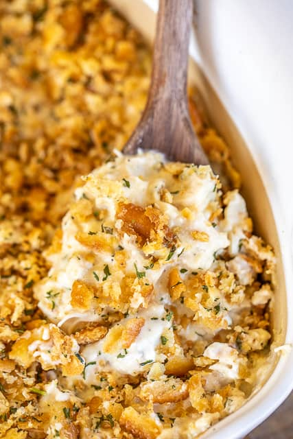

Million Dollar Chicken Casserole

Description
This casserole is super simple to make and tastes like a million bucks!
Can make this casserole in advance and refrigerate or freeze for later.
Ingredients
- 4½ cups chopped cooked chicken
- 4- oz cream cheese, room temperature
- 1 cup cottage cheese
- ½ cup sour cream
- 1 (10.75-oz) can cream of chicken soup
- ¼ tsp garlic powder
- ¼ tsp dried onion powder
- 1 sleeve Ritz crackers, crushed
- 5 Tbsp butter, melted
Steps
- Preheat oven to 350ºF. Lightly spray a 9×9-inch baking dish with cooking spray and set aside.
- Combine chicken, cream cheese, cottage cheese, sour cream, garlic powder, onion powder, and cream of chicken
soup. Spread into prepared pan.
- Combine crushed crackers and butter, sprinkle over chicken mixture.
- Bake uncovered 30 to 40 minutes.
Notes
- Use a rotisserie chicken for quick prep of the cooked chicken.
- You want the cream cheese to be very soft so it gets fully incorporated into the casserole. Microwave the
cream cheese for 15 to 20 seconds if you are short on time.
- Can prepare through step 3 and refrigerate or freeze for later.
- To bake after freezing, thaw completely and bake as directed above.
- For a gluten-free dish, use gluten-free Cream of Chicken soup and crushed pork rinds instead of Ritz
crackers.